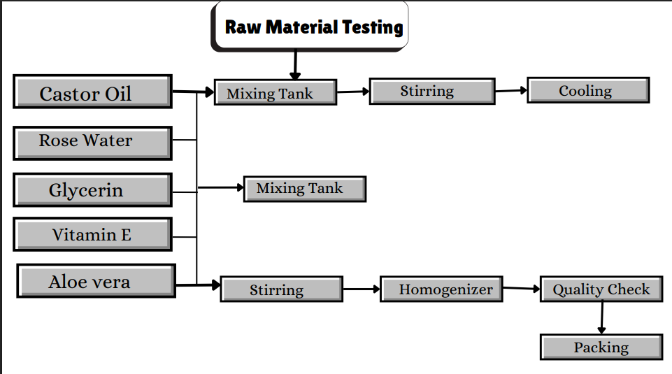

<!DOCTYPE html>
<html lang="en">
<head>
    <meta charset="UTF-8">
    <meta name="viewport" content="width=device-width, initial-scale=1.0">
    <link rel="stylesheet" href="style.css">
</head>
<body>
    
</body>
</html>
<header class="navbar">
    <div class="logo">
        🌿 <span>HerbaCream</span>
        <small>Chemical Prototyping</small>
    </div>

    <nav>
        <a href="index.html">Home</a>
        <a href="team.html">Team</a>
        <a href="ingredients.html">Ingredients</a>
        <a href="procedure.html">Procedure</a>
        <a href="process.html">Process</a>
        <a href="gallery.html">Gallery</a>
        <a href="video.html">Video</a>
        <a href="application.html">Application</a>
    </nav>
</header>

<hr class="divider">
<body>
<!--Process-->
    <section  class="manufacturing-section" id="process">

    <div class="container">
        <h2>Manufacturing Process</h2>
        <p class="subtext">
            Overview of the chemical prototyping workflow from raw materials to finished product.
        </p>

        <!-- Top Image -->
        <div class="process-image">
            
        </div>

        <!-- Process Grid -->
        <div class="timeline">

    <div class="timeline-item left">
        <div class="content">
            <span>01</span>
            <h3>Raw Material Selection</h3>
            <p>Sourcing and quality verification of herbal ingredients</p>
        </div>
    </div>

    <div class="timeline-item right">
        <div class="content">
            <span>02</span>
            <h3>Extraction</h3>
            <p>Obtaining active compounds from plant materials</p>
        </div>
    </div>

    <div class="timeline-item left">
        <div class="content">
            <span>03</span>
            <h3>Emulsification</h3>
            <p>Combining oil and water phases into a stable emulsion</p>
        </div>
    </div>

    <div class="timeline-item right">
        <div class="content">
            <span>04</span>
            <h3>Quality Control</h3>
            <p>pH testing, viscosity measurement, microbial testing</p>
        </div>
    </div>

    <div class="timeline-item left">
        <div class="content">
            <span>05</span>
            <h3>Stability Testing</h3>
            <p>Accelerated aging and shelf-life evaluation</p>
        </div>
    </div>

    <div class="timeline-item right">
        <div class="content">
            <span>06</span>
            <h3>Final Formulation</h3>
            <p>Optimized batch production and packaging</p>
        </div>
    </div>


</body>
